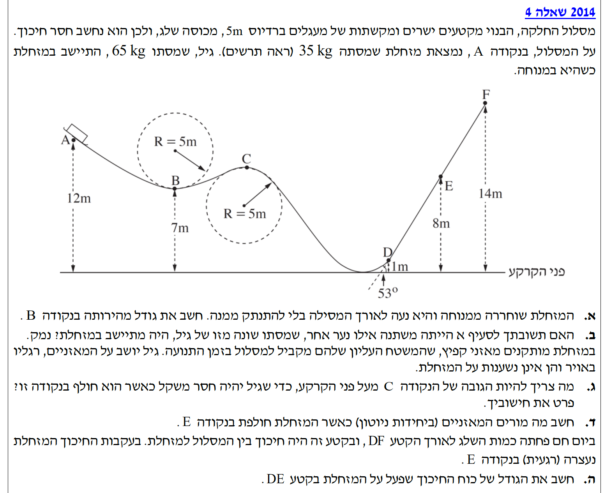
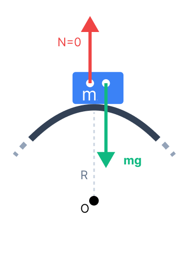
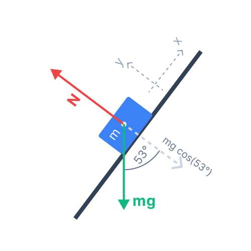

פתרון מודרך, צעד-אחר-צעד

כיוון שאין חיכוך לאורך המסלול, עבודת הכוחות הלא-משמרים שווה לאפס (\( W_{nc} = 0 \)), ולכן מתקיים חוק שימור האנרגיה המכנית: סך האנרגיה (פוטנציאלית + קינטית) בנקודה A שווה לסך האנרגיה בנקודה B.
נרשום את משוואת שימור האנרגיה בין הנקודות A ו-B:
נצמצם את המסה \( m \) (שכן היא אינה אפס) ונסדר את המשוואה כדי לבודד את \( v_B \). אנו עובדים עם פרמטרים עד להגעה לביטוי הסופי, מה שמונע טעויות ועוזר לנו להבין את הפיזיקה שמאחורי הנוסחה:
רק כעת, כשיש לנו ביטוי כללי ונקי, נציב את המספרים (כאשר תאוצת הכובד היא תמיד גודל חיובי \( g = 10 \text{ m/s}^2 \)):
אנו נסתמך ישירות על הביטוי הפרמטרי שפיתחנו בסעיף הקודם.
בסעיף א' פיתחנו באופן פרמטרי את משוואת שימור האנרגיה, וקיבלנו את הביטוי הכללי למהירות בנקודה B: \( v_B = \sqrt{2g(h_A - h_B)} \).
ניתן לראות בבירור שהמסה \( m \) אינה מופיעה בביטוי הסופי. כלומר, גודל המהירות תלוי אך ורק בהפרש הגבהים ובתאוצת הכובד.
נשתמש בחוק השני של ניוטון עבור הציר הרדיאלי בתנועה מעגלית. מכיוון שהנקודה C נמצאת בפסגת המעגל, מרכז המעגל נמצא מתחתיה. כמו כן, נשתמש בשנית בחוק שימור האנרגיה בין נקודה A לנקודה C.
אסטרטגיית הפתרון: לפני שצוללים למשוואות, כדאי לתכנן את הדרך. נחלק את המשימה לשני שלבים הגיוניים:
1. מציאת המהירות הנדרשת (דינמיקה): נרשום משוואת כוחות לתנועה מעגלית בנקודה C, ונדרוש שהכוח הנורמלי יתאפס (התנאי לחוסר משקל). כך נמצא איזו מהירות הכרחית למזחלת כדי לחלוף בנקודה זו בביטחה.
2. מציאת גובה הנקודה C (אנרגיה): לאחר שתהיה ידועה לנו המהירות הדרושה בנקודה C, נשתמש בחוק שימור האנרגיה המכנית (בין נקודת ההתחלה A שגובהה נתון, לבין הנקודה C). כך נחשב באיזה גובה חייבת להיות הנקודה C עצמה, על מנת שהמזחלת תגיע אליה בדיוק במהירות הנדרשת.
נתחיל מהשלב הראשון. נשרטט את תרשים הכוחות הפועלים על גיל (בלבד) בנקודה C ונבחר כיוון רדיאלי חיובי כלפי מטה (לכיוון מרכז המעגל).

נרשום את משוואת הכוחות בציר הרדיאלי (כלפי מרכז המעגל, למטה):
נתון כי במצב של חוסר משקל, הכוח הנורמלי מתאפס (\( N = 0 \)). נציב ונבודד את ביטוי המהירות בריבוע:
כעת, לאחר שמצאנו את המהירות הנדרשת, נפעיל את חוק שימור האנרגיה המכנית בין נקודת ההתחלה A לבין הנקודה C (עבור המערכת כולה):
נצמצם את המסה הכוללת \( m \) מכל אגפי המשוואה ונציב את \( v_C^2 = 50 \):
כאשר גוף נע על מישור משופע ישר, אין לו תנועה בציר המאונך למישור (אין תאוצה בציר זה). לכן, לפי החוק הראשון של ניוטון, שקול הכוחות בציר הניצב למישור חייב להתאפס. נשתמש בפירוק וקטור כוח הכובד לרכיביו.
נשרטט את תרשים הכוחות עבור גיל בנקודה E. נבחר מערכת צירים שבה ציר \( x \) מקביל למדרון וציר \( y \) ניצב לו כלפי מעלה.

על פי תרשים הכוחות, הכוחות הפועלים בציר \( y \) (הניצב למדרון) הם הכוח הנורמלי \( N \) בכיוון החיובי, ורכיב משקלו של גיל, \( m_2 g \cos(53^\circ) \), בכיוון השלילי. כיוון שאין תאוצה בציר זה, נרשום:
נציב את הנתונים המספריים: \( m_2 = 65 \text{ kg} \), ונתון מוכר מהטריגונומטריה \( \cos(53^\circ) \approx 0.6 \):
שימו לב להבדל העצום בין סוגי התנועה, וגם לבחירת המסה שלנו!
1. ההבדל במסלול: בנקודה C המסלול עקום ולכן יש תאוצה רדיאלית, אך בנקודה E המסלול ישר לחלוטין (רדיוס אינסופי). התאוצה הניצבת למדרון היא אפס, וחזרנו לשיווי משקל פשוט של מישור משופע.
2. בחירת המערכת (על מי מסתכלים?): תלמידים רבים נוטים בטעות להציב את המסה של כל המערכת (100 ק"ג). למה הצבנו רק את המסה של גיל (\( m_2 = 65 \text{ kg} \))?
הסוד הוא לזהות את הכוח המבוקש. המאזניים מודדים את הכוח הנורמלי שהם מפעילים על גיל אישית. לכן, אנו חייבים לבודד את גיל משאר המערכת ולבנות משוואות כוחות (FBD) רק עליו. לו היינו מבצעים ניתוח על "גוף מאוחד" (מזחלת + גיל), הנורמל שהיינו מוצאים שם הוא הכוח שמשטח השלג מפעיל על תחתית המזחלת – וזה ממש לא מה שהמאזניים של גיל מראים!
נשתמש במשפט עבודה-אנרגיה הקובע שעבודת הכוחות הלא משמרים (כאן, רק כוח החיכוך) שווה לשינוי באנרגיה המכנית הכוללת של המערכת. כמו כן, נזדקק לטריגונומטריה פשוטה כדי למצוא את המרחק הפיזי שעברה המערכת על המדרון.
ראשית, נמצא את אורך מסלול ההחלקה, הקטע מקודקוד D ל-E. נסמן אורך זה ב-\( \Delta x \). מתוך התבוננות במשולש ישר הזווית שנוצר על ידי המדרון, גובהו של הקטע הוא הפרש הגבהים \( \Delta y = h_E - h_D = 8 - 1 = 7 \text{ m} \) וזווית הבסיס היא \( 53^\circ \):
כעת נחשב את האנרגיה המכנית הכוללת בתחילת התנועה (נקודה A) ובסופה (נקודה E). נזכור שהמזחלת מתחילה ונעצרת במנוחה, ולכן האנרגיה הקינטית בשתי נקודות אלו היא אפס:
השינוי באנרגיה המכנית נובע במלואו מעבודת כוח החיכוך (\( W_{f_k} \)):
כוח החיכוך פועל בכיוון מנוגד לכיוון התנועה (זווית של \( 180^\circ \) בין וקטור הכוח לווקטור ההעתק, ולכן \( \cos(180^\circ) = -1 \)). הכוח החיצוני הזה גורם לגודל מהירות המזחלת לקטון לאורך המדרון עד עצירתה המוחלטת. נציב בנוסחת העבודה: